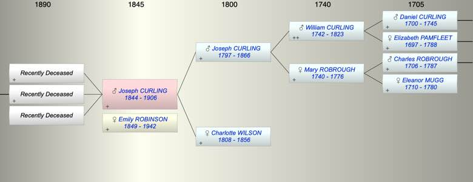

| [Index] |
| Joseph James CURLING (1844 - 1906) |
|  |
| b. 31 Jan 1844 at Lambeth |
| +. Emily Marian ROBINSON (1849 - 1942) |
| d. 18 Nov 1906 at Dachet, Bucks aged 62 |
| Parents: |
| Joseph CURLING (1797 - 1866) |
| Charlotte Holbert WILSON (1808 - 1856) |
| Siblings (2): |
| Charlotte Wilson CURLING (1834 - 1858) |
| Emma Josephine CURLING (1841 - 1841) |
| Children (3): |
| Grandchildren (2): |
| Bryan Wlliam Richard CURLING, Diana Mary CURLING |
| Events in Joseph James CURLING (1844 - 1906)'s life | |||||
| Date | Age | Event | Place | Notes | Src |
| 31 Jan 1844 | Joseph James CURLING was born | Lambeth | Note 1 | ||
| 1856 | 12 | Death of mother Charlotte Holbert WILSON (aged 48) | |||
| Jan 1866 | 22 | Death of father Joseph CURLING (aged 68) | Herne Hill, Surrey | Note 2 | |
| 18 Nov 1906 | 62 | Joseph James CURLING died | Dachet, Bucks | Note 3 | |
| Personal Notes: |
|
Granted Freeeedom of City of London 10 March 1865 son of Joseph, fishmonger
Lieutenant in Royal Engineers ex his father’s probate Entered Oriel College Oxford 1886 aged 42 BA Hons Theology 1890. Missionary and Principla theological College St John’s Newfoundland. 1901 census living Hamble House, Hamble Le ice, South Stoneham, Hants 57 clergyman late Lieutenant RE born Henrne Hill, Surrey, with wife Emily M 51, born Canada and Selina 13 daughter b Oxford. |
| Created on a Mac™ using iFamily for Mac™ on 8 Oct 2023 |